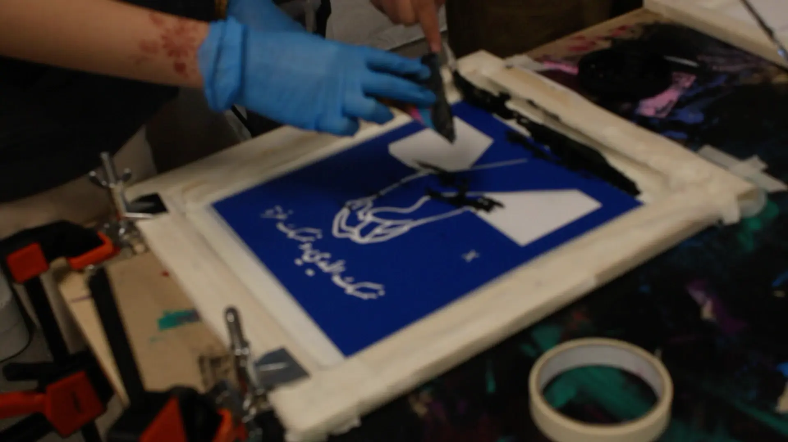
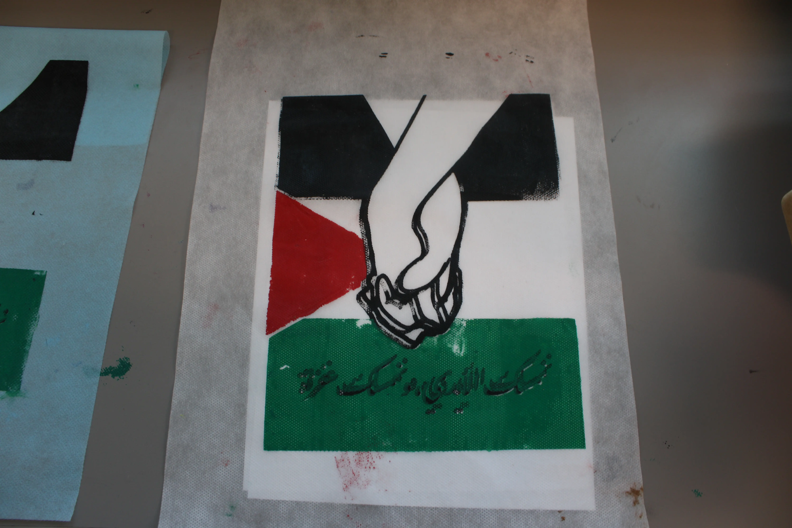

Hi, my name is Mariam! Over the course of “ Our Shared Canvas” Screenprinting Project, I gained both digital and hands-on skills, ranging from software like Adobe Photoshop and Premiere to measuring, cutting, and meshing wood. At the very beginning of this project, we used Adobe Photoshop to get a general visual idea of the angles and scenes we wanted to include in our documentary, which we would later film using the B-roll collected throughout the process. We also used Adobe Photoshop to create the most important part of this project: our screen-printing design. We learned to use different brushes and tools to create a design that visually represents a real-life issue in the world. For my project, I focused my design on the genocide taking place in Gaza, Palestine. After that, we began creating our dimensional diagrams, cut lists, and color mixing all in Adobe Illustrator. Next, we took a break from the digital steps to measure and cut our wood based on our cut lists. I personally needed to build three frames for the three colors in my design, so it was a lengthy process. Once all the pieces of wood were cut, we used wood glue, a stapler, and the help of a partner to assemble the frames. We then stretched mesh across the frames, again with a partner's help (thank you to my class for being a great support system!). With the hands-on building finished, we transitioned back to our digital designs and loaded each color into the software to print onto vinyl. We ironed that vinyl onto our frames and peeled away the parts we didn't need. Almost done! Finally, it was time for the actual screen-printing. We started by printing on paper to get a feel for the process, then we did the actual fabric. It was tedious since each color had to dry completely before we could print the next layer, but we eventually finished. To wrap everything up, we took all the B-roll we collected over the course of the project and used Adobe Premiere to create a documentary showcasing the hard work it took to achieve our final screen-printed results.
Some of the most important skills that I gained throughout this project are communication, collaboration, and accountability. In my opinion, these are the top three most important skills needed for a project like this. Personally, I learned how to communicate with my group members regarding tasks that needed to be completed, while maintaining a healthy and respectful collaboration with them. I strengthened my bond with my group members over the course of the project, resulting in not only skills being gained, but also lasting memories. Another skill that I learned to be more effective at during this project is accountability. No one is responsible for the things that must get done in your life other than yourself, and while it can be a challenge to overcome procrastination, accountability and responsibility help tremendously in the long run. I am beyond grateful to have learned this skill early on so that many doors of opportunity can open for me later in life.

